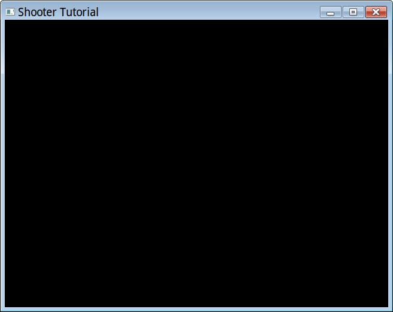
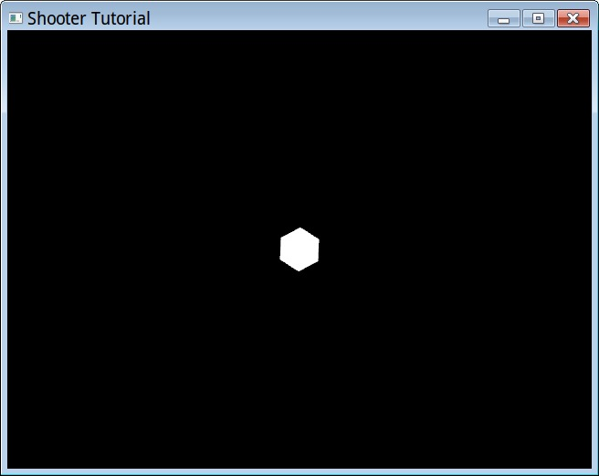
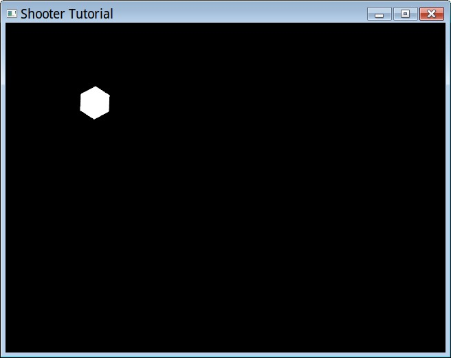
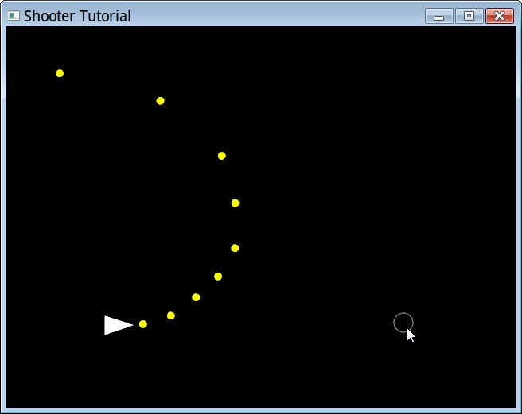
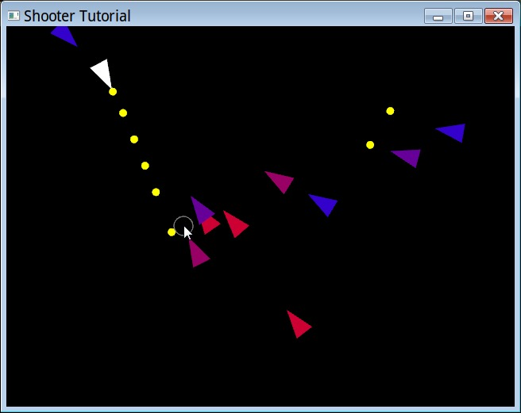
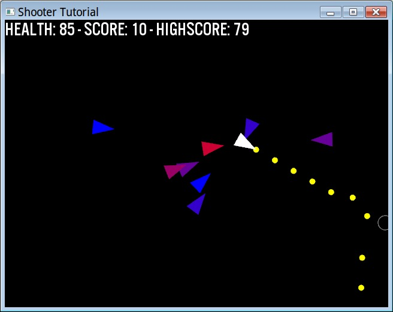

Let's walk through all the steps required to make a simple game in Lobster by making a shooter in the same vein as "Geometry Wars": enemies come at you from all directions, and you have to keep shooting them until you invariably... die. Sound like fun?
You can follow along just looking at the code and screenshots below,
or by loading up samples/shooter_tutorial/tut*.lobster and
trying them out yourself.
Decent experience in at least one other programming language required. Minor familiarity with Lobster is required (this tutorial won't explain all the basics, and focuses mostly on the graphics aspect). No need to know how games work, though minor math knowledge may help.
Let's start by creating a blank canvas for us to draw on. Something like this:

Impressively... empty.
import vec
import color
import gl
fatal(gl.window("Shooter Tutorial", 640, 480))
while gl.frame() and gl.button("escape") != 1:
gl.clear(color_black)gl.window is our graphics initialization routine, and is
the first thing we need to do before we can access any other graphics
functionality. We specify a title and a size, though note that these are
merely suggestions: on desktop platforms the user may resize/maximize
our window, and on mobile platforms they just determine landscape vs
portrait orientation, whereas the resolution is determined by the device
itself.
gl.window returns an error string if something goes
wrong (and things can go wrong, behind the scenes this call boots up an
OpenGL engine including compiling shaders and what not), and
fatal is a utility function defined in
std.lobster that we're including that will quit the program
and show the error string if available.
Once we're up and running, this while loop is our frame
loop. Games work by rendering the current state of the game
repeatedly to the screen, preferably fast (30-60 times per second),
giving the impression of smooth animation. gl.frame is the
core of all of this: it makes sure we advance to rendering the next
frame, and checks for input etc. If the user clicks the close button or
otherwise terminates the app, gl.frame will return
false, which is our signal to quit the game. Additionally,
we want the user to be able to quit if they press the escape key, so we
check for that too.
Then inside the frame loop, we clear the screen (remember that we
draw repeatedly), and then we're ready to draw. color_black
is a constant from color.lobster, representing a 4
component RGBA.
So now we can start drawing, right? Well, we also have to determine where and how we want to draw:

Look at that! This is starting to look impressive! Check out those polygons!
import std
import vec
import color
import gl
fatal(gl.window("Shooter Tutorial", 640, 480))
let worldsize = 20.0
while gl.frame() and gl.button("escape") != 1:
gl.clear(color_black)
gl.color(color_white)
gl.translate(float(gl.window_size()) / 2.0)
gl.scale(gl.window_size().y / worldsize)
gl.circle(1.0, 6)Before we can actually draw, we have to talk about coordinate
systems. By default, coordinates in Lobster correspond directly to
pixels, with (0,0) in the upper left corner (a left-handed coordinate
system), and the total number of pixels depending on the device (or the
user), which during any frame is given by gl.window_size.
While working directly with pixel sizes may be useful for some
applications, generally, we want games to be scalable, meaning they
should roughly look the same irrespective of what device they run
on.
There is no universal way to do this for games however, because besides different resolutions, you have the more problematic issue of different aspect ratios, varying from 4:3 on the iPad (relatively square) to 3:2, 16:10 and 16:9 (longitudinal) on most desktops and other mobile devices. Your game should ideally look good on that whole range. If you only aim for one ratio, you'll get borders or things cut off on the other ratios. What works best depends on your game content.
Here we'll take a simple approach: make the middle of the screen our coordinate system origin, and rendering outward enough from there that we have all ratios covered.
gl_translate changes our coordinate system, and is used throughout
graphics rendering in Lobster to render things at different portions of
the screen. Here we move from upper-left to the middle of the screen by
translating by half the gl.window_size.
Then we have to determine how much of the game world we want to show. We don't want that related to pixels either, as we don't want people with smaller screens see less of the game. The computer doesn't care about real world sizes like feet or meters, so we can make up whatever number we want. It is useful however to pick a number, since that means if we later want to show more or less of the gameworld, we just have to change one number. Here we say we want the screen to be able to fit at least 20 units, and we make this relative to the y resolution of the screen (we're assuming that'll be the smaller one of the two).
Now we can finally draw! Let's put down a temporary graphic for the
player. gl.circle draws circles around the current origin,
with the first argument being the radius (see how we're using the world
scale for this?), and the second argument is the number of sides.
Setting this to something low like 6 actually gets us a hexagon rather
than a circle.
Pfew, that's a lot of talk just for a circle, but we're getting somewhere. Next up, let's move our player around. Because games are supposed to be... interactive

It moved! I swear!
import std
import vec
import color
import gl
fatal(gl.window("Shooter Tutorial", 640, 480))
let worldsize = 20.0
var playerpos = float2_0
let playerspeed = 10
while gl.frame() and gl.button("escape") != 1:
gl.clear(color_black)
gl.color(color_white)
gl.translate(float(gl.window_size()) / 2.0)
let scale = gl.window_size().y / worldsize
gl.scale(scale)
let dir = float2 { (gl.button("d") >= 1) - (gl.button("a") >= 1),
(gl.button("s") >= 1) - (gl.button("w") >= 1) }
let newpos = playerpos + normalize(dir) * gl.delta_time() * playerspeed
if not any(abs(newpos) > float(gl.window_size()) / scale / 2.0):
playerpos = newpos
gl.translate playerpos:
gl.circle(1.0, 6)To make our player move, we added 2 new variables:
playerpos and playerspeed. We initialize the
former with a vector constant from vec.lobster:
float2_0 means all zeroes.
We first figure out which direction the player wants to move by
checking the current state of the WASD keys: by combining the boolean
values (0 / 1) for each direction, both DA and SW give us a -1 / 0 / 1
value which conveniently corresponds to a directional vector
(dir).
Now, we can't just add this vector to the player and be done with it, we have to take into account:
If the player tries to move in both x and y directions at once,
the magnitude of the dir vector is sqrt(2) instead of 1,
and thus the player would move faster! We want him to move in all
directions at equal speed. normalize ensure we have a
vector of length 1. You wouldn't believe how many games have this bug in
it!
Remember how the code inside the while loop is our frame? Well,
depending on the device, we have no idea how many frames per second
we're actually running at. If we simply move a fixed amount each frame,
we'll end up moving faster on faster computers! Yet another common bug
that we'll avoid by multiplying our vector by
gl.delta_time, which is the number of seconds (usually a
fraction of a second, e.g. 0.033 at 30 FPS) that has passed since the
last frame we rendered. The result is that we'll now move 1 unit (the
length of the vector) per second exactly, regardless of how fast or slow
our machine is rendering.
Of course, "1 unit per second" may well be too slow for our intended game, so we factor in our own player speed. We can tweak it later.
Last, but not least, once the player can move, we have to worry
about him staying within the game world. What we have to do, is a very
simple form of collision detection. Collision detection can be
very difficult to program, but here we start by just checking the
boundaries of the screen. Note that I put our new position in a separate
variable, this is such that we will only make it the new player position
if we're still inside the world. I also created a variable for the scale
we set, so that we can use it to know where the screen boundaries are.
We first take the absolute value of our new position (so we only have to
check one quadrant of the world). Notice how pretty much everything in
Lobster works on vectors? This makes it easy to write game code without
repeating your code for x and y all over the place. We compute the size
of a quadrant, and compare. < here gives us a vector of
booleans, to check if any coordinates (x or y) were out of bounds, we
use any. If this succeeds, we only then actually move the
player. Pfew!
Now we have computed a new position, we have to make sure it has an
effect. We do this by translating our player position from the middle to
where we want to now draw our hexagon. Note something special about this
gl.translate: it has a block of code following it (notice
the :) much like if or for.
gl.translate here actually works like a control structure:
it first translates, then executes the body, then resets the
translation. This is because what we want to render afterwards (enemies
perhaps) should not be rendered relative to the player, but relative to
what we had before the player (the world origin). If that sounds
confusing, it may become clearer later with more code. Stacking all
these transformations is one of the more confusing things about games
programming, but it is also rather powerful once you get the hang of
it.

What happens as I move the mouse cursor in a clockwise arc around the player from 12 to 3.
import std
import vec
import color
import gl
fatal(gl.window("Shooter Tutorial", 640, 480))
let worldsize = 20.0
var playerpos = float2_0
let playerspeed = 10
class bullet:
pos:float2
dir:float2
let firerate = 0.1
let bulletspeed = 15
var bullets = []
var lastbullet = gl.time()
while gl.frame() and gl.button("escape") != 1:
gl.clear(color_black)
gl.color(color_white)
gl.translate(float(gl.window_size()) / 2.0)
let scale = gl.window_size().y / worldsize
gl.scale(scale)
let dir = float2 { (gl.button("d") >= 1) - (gl.button("a") >= 1),
(gl.button("s") >= 1) - (gl.button("w") >= 1) }
let newpos = playerpos + normalize(dir) * gl.delta_time() * playerspeed
if not any(abs(newpos) > float(gl.window_size()) / scale / 2.0):
playerpos = newpos
let tomouse = normalize(gl.local_mouse_pos(0) - playerpos)
if lastbullet < gl.time():
bullets.push(bullet { playerpos, tomouse })
lastbullet += firerate
for(bullets) b:
b.pos += b.dir * gl.delta_time() * bulletspeed
gl.translate b.pos:
gl.color color_yellow:
gl.circle(0.2, 20)
bullets = filter(bullets) b:
magnitude(b.pos) < worldsize * 2.0
gl.translate gl.local_mouse_pos(0):
gl.line_mode 1:
gl.color color_grey:
gl.circle(0.5, 20)
gl.translate playerpos:
gl.rotate_z tomouse:
gl.polygon([ float2 { -0.5, 0.5 }, float2_x, float2 { -0.5, -0.5 } ])To be able to shoot, first we have to worry about giving our player
an orientation. We compute that in the vector tomouse which
we get by subtracting the player position from the mouse position (what
we want to shoot towards). Something funny is going on here though, as
the name gl.local_mouse_pos may indicate: normally mouse
positions are in pixels, but those we can't compare against the player
position, which is in world coordinates! gl.local_mouse_pos
however gives us the mouse position relative to the current transform,
which is world coordinates (as specified by the
gl.translate and gl.scale above). We then
normalize this vector to make it easier to use, as we don't care about
the original length of this vector.
To make the players orientation visual, we first render the player
differently: rather than a simple circle, we render him as a pointy
triangle, to make it clear what direction he's looking at. That's the
gl.polygon at the end with 3 explicit coordinates (relative
to the playerpos, which has now become our coordinate system origin
thanks to gl.translate). Additionally, we insert a
gl.rotate_z command to make the pointy part of the triangle
always look towards the mouse cursor. The z is because if
we rotate around the z axis, we end up rotating the xy plane, which is
what we look at in 2D. The argument to gl.rotate_z can
either be a vector (as used here) or an angle in degrees. Vectors are
generally awesomer.
Additionally, to cater for situations where the mouse cursor isn't
visible (which it typically isn't in games) we draw a circle (for now)
at the mouse location to give the player feedback where he's aiming at.
This starts at the gl.translate before where we draw the
player (before, because if the two overlap, the last one will be drawn
on top). We translate to the mouse location in world space, change the
linemode to 1 (which draws just the outline instead of a filled circle)
and change the color. As you can see, all these commands are ones that
undo themselves automatically after the circle is drawn, which is very
convenient.
Now let's start firing bullets. To keep things simple for now, we fire them automatically, but firing them using a button would be very easy to add (try it!). We add some constants up top, a firerate (second to fire the next bullet) and their speed of travel in the world. To keep track of what's going on, we just need a list of bullets, and track when the last bullet was fired.
We define what a bullet is by defining a new class type, saying that it just has a current position and direction.
Now look at the if inside the code: we check if time has
progressed beyond the point the last bullet was supposed to be fired,
and if so, we add a new bullet to the list of bullets, making it start
at the current player position, travelling in the direction of the
mouse. We also increase the lastbullet variable to cause
the next one to be fired in 0.1 seconds.
A side note on how we're implementing bullets here: there's a couple of things not ideal about this, which we do all to keep the example simple and to really build a game from the ground up. First, the way the checking for time is implemented here is a bit fragile, as big time fluctuations may cause bullets to be shot at irregular intervals.
Now that we have a list of bullets being generated, we have to update
them and draw them. The first line in our for loop updates
them, in a manner that should look familiar by now: we move the position
along the direction, scaled by the amount of time that has passed this
frame and their general speed in world units per second.
Now they're moving, we can draw them at their current position. We make them yellow, and 0.2 units in radius.
One last thing to before we're done: our list of bullets will grow
indefinitely, and eventually make the game run to a crawl, even though
most have moved off screen. We'll cull bullets that have moved far
enough away from the origin that they're not visible anymore. We'll do
this functional style: filter will give us a new list of
bullets for which the magnitude of the position (which is the same as a
vector from the origin, which is the middle of the screen) is within
twice the world size. We could cull them more precisely than this, but
for now, this will have the desired effect of keeping the list
small.
Wow, there's a lot to understand to make even a simple game. But the good news is that in many games you will see the patterns of what we're doing here again and again, so it is rather useful to get familiar with. It even translates to 3D.
But for now... target practice!

Since the code is getting long, let's continue, talking purely in terms of modifications to the existing code:
def renderpointytriangle(pos, dir):
gl.translate pos:
gl.rotate_z dir:
gl.polygon([ float2 { -0.5, 0.5 }, float2_x, float2 { -0.5, -0.5 } ])First, let's take the code for rendering the player and put it in its
own function, since we'll be needing it for enemies too. Call instead of
the original code with
renderpointytriangle(playerpos, tomouse)
class enemy:
pos:float2
hp:int
var enemyrate = 1.0
let enemyspeed = 3
let enemymaxhp = 5
var enemies = []
var lastenemy = gl.time()We can set up enemies analogous to bullets. Of course, we could share some of this functionality between them, but let's not complicate matters for now. Add this to the declarations.
if lastenemy < gl.time():
enemies.push(enemy { sincos(rnd(360)) * worldsize * 2.0, enemymaxhp })
lastenemy += enemyrate
enemyrate *= 0.999
for(enemies) e:
let playerdir = normalize(playerpos - e.pos)
e.pos += playerdir * gl.delta_time() * enemyspeed
for(bullets) b:
if magnitude(b.pos - e.pos) < 1.0:
e.hp = max(e.hp - 1, 0)
b.pos = float2_x * worldsize * 10.0
gl.color lerp(color_red, color_blue, div(e.hp, enemymaxhp)):
renderpointytriangle(e.pos, playerdir)
enemies = filter enemies: _.hpDuring the frame, we use the above code to deal with enemies, which is very similar to bullets yet again. We spawn new enemies initially once per second. To compute a spawn location, take a random angle, convert to a vector, then offset that vector to somewhere outside the screen to have them flock in from all directions.
We do one special thing: we keep reducing the enemy rate subtly. This guarantees the game will get harder and harder and the player will guaranteed die eventually, it is just a matter of when.
Then we loop through all enemies, compute a vector towards the player, and move the enemy towards him. Of course, now we need to do collision detection between bullets and enemies, which we do in brute force manner by checking every bullet with every enemy. If the quantity of both stays low, this is ok, but for large amounts of objects this approach will eventually get too slow, requiring bucketing of objects in a grid. For now, this is ok. We check the distance between the center of the bullet and the center of the enemy, and consider it a hit if they are a generous 1 unit apart or less. Of course, we could check exact collision with the triangle, but besides being complicated, it might not even be desirable for gameplay.
If we have a hit, we reduce the HP of the enemy by one (we're using
max to ensure it doesn't go below 0, you'll see why in a
bit). We also need to "kill" the bullet when that happens, but since we
already have code that removes bullets that leave the world, we are lazy
and make use of that, by moving the bullet far from the center.
Then we render the enemy conveniently with our existing function. We
do something fun here, letting the health of the enemy determine its
color, from healthy blue to a dead red. We use lerp
(linearly interpolate) of 2 colors. div is a useful
function that does the same as / on 2 integers but gives a
float result.
Then of course we need to cull dead enemies, which we do with a
similar filter function. Culling all at once like we do
here with bullets and enemies is nice, because culling during update can
introduce subtle bugs.
We can't really play yet however, since we can't die...

Now we have some loose ends to wrap up to call this thing a "game": we have to keep track of the player health and score (and highscore), and give him a start / game over screen in-between sessions.
To do that, we will have to be able to render text. First step
towards doing that is loading up a font, right after
gl.window:
check(gl.set_font_name("data/fonts/US101/US101.ttf") and gl.set_font_size(32), "can\'t load font!")check is another useful function much like fatal, that
ensures the first argument is true, and if not, exits the program with
the given message.
To implement the functionality, we start with some new variables:
var playerhealth = 0.0
var score = 0
var highscore = 0
var playing = falseinside our frame, we then test our playing variable, and
when true, run the game code we were running before, and if false,
display the in-between screen, which simply says:
let msg = "press space to play!"
gl.translate (gl.window_size() - gl.text_size(msg)) / 2:
gl.text(msg)
if gl.button("space") == 1:
score = 0
playerhealth = 100.0
playerpos = float2_0
bullets = []
lastbullet = gl.time()
enemyrate = 1.0
enemies = []
lastenemy = gl.time()
playing = trueThe gl.translate centers our text using the handy
gl.text_size which tell us the size of a string in pixels
before we've even rendered it. gl.text then draws it. We
then reset the game state when the game starts, and next frame the game
will be playing.
To show the current state to the player, we use the simple:
gl.text("health: {ceiling(playerhealth)} - score: {score} - highscore: {highscore}")We call this as the very last thing in the frame, so it is visible
regardless of whether the player is in-game or not, for simplicity.
ceiling is useful since we'll be calculating the player's
health in float, but want to show only the whole numbers.
ceiling here is better than truncate, since we
only want to show 0 when the player is truely dead.
let playervec = playerpos - e.pos
if magnitude(playervec) < 1.0:
playerhealth -= gl.delta_time() * 50.0
if playerhealth <= 0.0:
playerhealth = 0.0
highscore = max(highscore, score)
playing = falseThen finally, inside our for(enemies) e: loop, we add
this bit of code which checks if this particular enemy is "touching" the
player. If so, we subtract health for how long he is touching. If the
player runs out of health, we update the high score, and revert back
into non-playing mode.
Game Over, and Tutorial Over!
We now have a very basic structure of a game. While it is not impressive, it does deal with all the typical things a game does, and thus extending it from here should be fun and easy. Some ideas of things you could add:
Tweak all the current variables: player and enemy speed, enemy health and spawn rates, etc. The current ones are workable defaults, but are they the most fun?
A variety of enemy types. You can make them differ by speed, size and hitpoints easily, though giving them different behaviors will give even more variety.
Pickups for the player. Think of randomly spawning health boxes, and powerups (faster fire, spread fire etc).
Better graphics! It is a very good idea to make a game fun first with geometric shapes like we have done, but then once the game has taken shape, adding graphics can make the game feel more immersive and give better feedback to the player.
Better UI and main menu.
Game structure: different levels the player can try to beat, permanent upgrades the player can buy, etc.
Also, at this point, our game has no sound at all. If you'd like to
see how to add some ambient or enemy sounds, have a look at the use of
the play_ and sound_ functions in
tut_sound.lobster. This example also shows how to to
dynamically adjust the volume and pause or resume individual sounds.
This tutorial has all game state in top level variables, for
simplicity of explanation. If you want to have a look at what the code
would be like if you instead stored all of it in classes, have a look at
tut_obj.lobster.